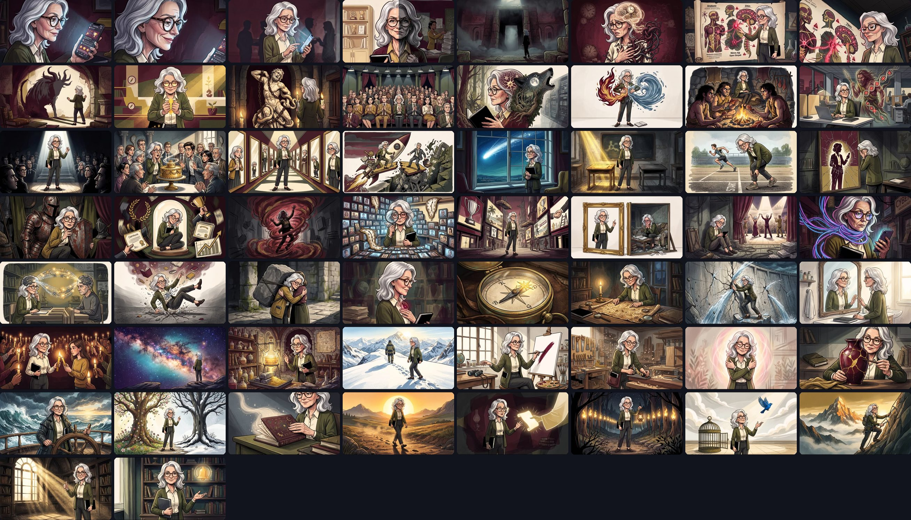
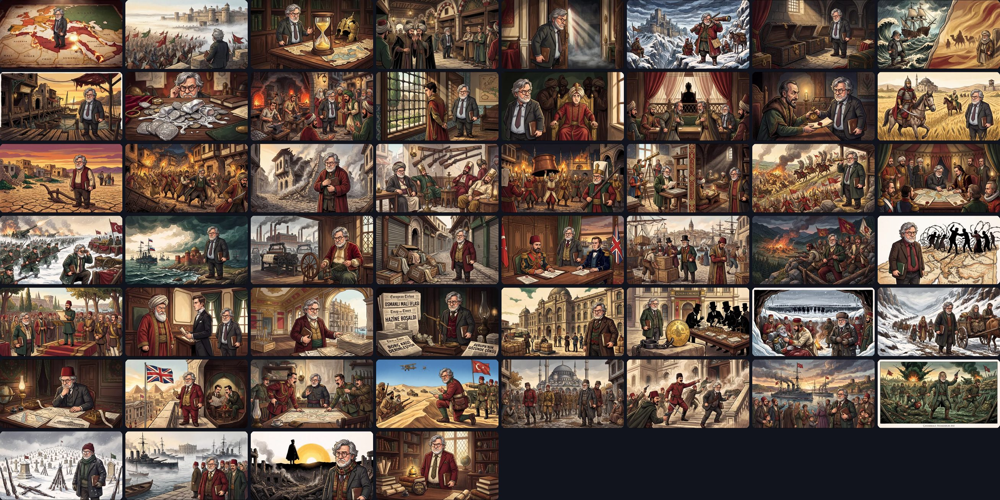

AI video portfolio
Fatma Nur Döner
I am an AI content producer. I make short-form 9:16 and long-form 16:9 video with generative AI and run it from the first idea to launch. I started on Higgsfield, then produced in Adobe Firefly with Veo, Kling, Sora and Seedance, and I test each new model as it comes out. Today my own channels run on an automated pipeline I built with Claude and Python. On my YouTube channel Kıyamet Günü I publish fully AI-generated series with episodes of 9 to 17 minutes.
- 5+channels launched since April 2026
- 200K+organic views, no paid promotion
- 2Shorts past 30K views
- 2campaign films published by Yapı Kredi
Background: B.Arch from METU, now doing an M.Sc. in Information Systems. A mobile and PC gamer, and design lead for DevJam, Ankara's largest game jam. This page starts with spec ads for Royal Match, then work from my own channels, then campaign films for Yapı Kredi.
Spec ads for Royal Match
Five vertical user acquisition ads, 19 seconds each, made for my Dream Games application. There is no case study stage yet, so I made these on my own initiative, working quickly with my own AI generation flow. They were put together in a very short time, only to give a first idea of how I would approach the job.
01Snake from above
Built on Royal Match's longest-running ad idea, the snake. It slides down the shaft, then hangs over the king while you play the board. On the last move the wrong match is played, the king falls into the well and the snake is waiting. The snake shots are AI video, and every on-screen line is voiced in Turkish, in sync with the text.
02Stop the lava
A lava ad with a board that really plays, opening and closing on AI video of the lava, with a Turkish voiceover on every line. Four good moves set off cascades and push the lava back, the fifth is the wrong match and the lava floods the room. The tiles are cut from the store screenshots and played by my own match-3 engine in Python: swaps, pops, falling tiles, cascades and particles.
03Save the King
A story ad with a Turkish voiceover. The viewer is put in charge of a kingdom whose king has gone missing, the dangers flash past, then the king appears trapped in the game's own puzzles. Every cut lands in a pause in the voice.
04Save the King, 8 frames a second
The same story as a flipbook. The picture changes every eighth of a second on a 120 bpm beat, and each step jumps the camera or swaps the image, so stills play like stop-motion animation.
05The King Didn't Make It
A fail ad. One move is left, the player picks the wrong match, the door locks and the crown sinks. It ends on the classic hook: could you have saved him?
How they were made
- Game footage stays real
- The king, the boards and the app icon come from the game's public store listing. Nothing from the game was generated with AI.
- AI builds the world around it
- The throne room, flooding chamber, shark, falling rocks, spikes, locked door and sinking crown were generated with Nano Banana in Google Flow. The snake and lava clips are AI video from Flow, made with Omni 1.2 Flash and Veo 3.1 Lite.
- Voice and sound
- The Turkish voiceovers were made in ElevenLabs; each line is cut at its pauses and placed on the frame where its text appears. Sound effects and music were synthesized in code and duck under the voice.
- Assembly in code
- Python built every cut: camera moves, on-screen text, flash and shake effects, the beat grid of the flipbook and the end card. The live boards run on a small match-3 engine I wrote, using the real tiles, and the king and snake are cut out of the store art so they move above the board and the king can fall into the well.
- Built for variation
- Each ad is driven by parameters: the board, the moves, the on-screen lines and their timing. A new hook, a new board layout or a new voiceover is a re-render, not a re-edit. The same Save the King story ships in two cuts, a voiced story and an 8-frames-a-second flipbook, and the fail idea runs in three settings: snake, lava and locked door.
- Quality check
- Every output was checked against the game. I kept the real king and tiles from the store art instead of generating them, so nothing off-brand reaches the screen, and cut shots that hurt the read of the gameplay, such as a snake crossing over the board.
Spec work made for my application. Not commissioned by or affiliated with Dream Games.
Long-form 16:9 series on my channel, Kıyamet Günü
Episodes run 9 to 17 minutes and are fully AI-generated: script, images, video, voice and edit. The first season of the Istanbul zombie story ran five episodes and reached 17,000 views in its first three weeks, with no paid promotion. These are excerpts, cut down for this page. See the channel on YouTube.
Zombie Outbreak in Istanbul: The Last Metrobus, episode 1
An interactive-style story told in second person: it is 6:42 pm, you are on a packed metrobus over the Bosphorus, and every phone starts screaming at once. A consistent cast across dozens of scenes, with Turkish narration and subtitles. The first 2.5 minutes of a 10:41 episode, which passed 8,600 views.
Why do we get jealous?
A psychology explainer led by a recurring host character, a gray-haired professor who walks through the science scene by scene. An excerpt from the animated opening of a 13:36 video.
Scenes from the full video, in order. Click to open it larger.

Why did the Ottoman Empire collapse?
A history explainer with a second recurring host, an older male professor who steps into each period: the map of the empire, the siege lines, the palace corridors. The animated opening of an 11:25 video.
Scenes from the full video, in order. Click to open it larger.

Kule, a horror series from my YouTube channel
A seven-part Shorts series I write and produce end to end. I still run this channel and new episodes are on the way, so the first episode is here.
Episode 1: Don't open the door
Deniz takes a job as the night watch in a tower for 30 days. There is one rule: never open the door to anyone who calls your name. The thing behind the door is never shown; the fear comes from sound, light and the door itself. 51 seconds, vertical, in Turkish.
How it was made
- Story and character
- A series card fixes the rules, the character and the look, so all seven episodes stay consistent. Each episode opens with a second-person hook and ends on a choice question for the viewer.
- Images
- Fourteen scenes per episode, generated with Nano Banana in Google Flow from a saved character reference.
- Voice
- Turkish narration from ElevenLabs.
- Assembly in code
- Python aligns every scene to the narration, then adds camera moves, captions, the on-screen HUD (heart rate in sync with a heartbeat sound, days left, supplies, lantern) and synthesized sound effects.
Miniature worlds, my first channel
My first channel, Miniaworlds, was my first experiment with AI video, before I started producing it regularly. Tiny workers take on everyday objects: a sugar cube, a flood, a pizza. Two of the Shorts passed 30,000 views. I stopped the channel because the format was hard to automate and could not grow into long-form video, so it was not a path to monetization. See the channel on YouTube.
Tiny workers vs sugar cube
34,909 views
A flood hits the tiny world
33,022 views
The tiny workshop goes dark
2,935 views
Mini workers making a pizza
1,147 views
The giant watermelon
795 views
One second changed the entire city
The last Short before I stopped
Campaign work for Yapı Kredi
Both films were published on Yapı Kredi's social media accounts, including TikTok.
Domestic flight ticket offer
A customer acquisition spot for a 1,000 TL flight discount. One fixed frame, an airplane window, with AI-generated views of Turkey changing behind it. Made in Adobe Firefly after testing many models there for each shot, including Kling AI, Nano Banana, Veo, Seedance and Runway. 23 seconds, vertical.
Private pension (BES) campaign
A child at a funfair asks for a toy, and the answer points to the family's pension account. Character-led and dialogue-driven, generated with Kling AI. 20 seconds, vertical.
How I work, from idea to launch
The same loop runs on my own channels, so one idea becomes a finished video with very little manual editing.
- IdeateHook and script first, so every shot has a job.
- Pick the tool mixTest models shot by shot and keep the best: Nano Banana for stills, Veo, Kling or Omni for motion, ElevenLabs for voice.
- Automate variationPython, written with Claude, assembles image, voice and sound, so variants are re-renders.
- Quality checkCharacter consistency, brand accuracy, artifacts and sync to voice, before anything ships.
- Measure and iterateTrack views and engagement per video and push the formats that hold attention.
Tools I have worked with
- Veo
- Kling AI
- Sora
- Seedance
- Higgsfield
- Runway
- Nano Banana
- Google Flow
- Adobe Firefly
- ElevenLabs
- Claude
- GPT
- Gemini
- Python